Dashboard comercial
Facturación del mes desde SAP con variación, pedidos, forecast del pipeline, deuda vencida, meta del mes, facturación de los últimos 30 días, top 20 clientes, top productos y agenda del día.
Ventas, clientes, cobranza, atención al cliente, notas de crédito, calidad y marketing en un solo sistema, sincronizado cada hora con SAP. Con correo y agenda de Microsoft 365 y Gmail, e inteligencia predictiva Veneti IA.
crmdeskpro.integralflex.clParte de IntegralFlex Suites
CRMDesk Pro es el CRM comercial que trabaja sobre los datos reales de SAP. Sincroniza cada hora clientes, ejecutivos, facturas, cartera, stock y precios, para que el equipo de ventas vea la facturación, la deuda vencida y lo que compra cada cliente sin entrar a SAP. Desde la ficha Cliente 360° el ejecutivo registra gestiones, agenda reuniones, abre oportunidades y genera la venta con el stock y el precio vigente.
Además de vender, el sistema ordena lo que pasa después de la venta. Atención al Cliente gestiona reclamos y solicitudes con SLA, áreas responsables, aprobaciones y base de conocimiento. Las notas de crédito pasan por una cadena de firmas según el monto. Las no conformidades se resuelven con la metodología 8D. Marketing administra leads, campañas, journeys y consentimientos, y Automatización ejecuta reglas y recordatorios de cobranza.
La gerencia sigue el negocio en el dashboard, en reportes por mes, ejecutivo, región y producto, y en Veneti IA, que pronostica la facturación de los próximos meses y detecta los clientes con riesgo de fuga. Todo queda registrado en la auditoría del sistema, con roles, verificación en dos pasos y simulación de usuarios.
Facturación del mes desde SAP con variación, pedidos, forecast del pipeline, deuda vencida, meta del mes, facturación de los últimos 30 días, top 20 clientes, top productos y agenda del día.
Ficha de cada cliente con lo facturado en 12 meses, número de facturas, ticket promedio, última compra y deuda vencida. Pestañas de timeline, pedidos, cartera, oportunidades y casos de atención, con portal para el cliente.
Busca al cliente y revisa su estado de crédito al instante. Busca productos por nombre o SKU con su stock por centro y el precio SAP, arma el carrito y genera el pedido.
Kanban de oportunidades por etapa (prospecto, contactado, cotizado, negociación, ganado) con monto, probabilidad, monto ponderado, fecha de cierre y alerta de oportunidades inactivas.
Tareas con prioridad y vencimiento (hoy, atrasadas, próximas) y agenda mensual, semanal o en lista sincronizada con Outlook M365 y Gmail.
Correo recibido y enviado de Microsoft 365 y Gmail dentro del CRM, con seguimiento de aperturas, plantillas, firma y contactos sincronizados.
Casos por tipo (reclamo, consulta, garantía, facturación, despacho y otros), estado, área y prioridad P1 a P4, con SLA y alertas. Incluye kanban, dashboard, costo de la no calidad, aprobaciones, base de conocimiento y configuración.
Solicitudes de nota de crédito por motivo y responsable, con una cadena de liberación de hasta cinco firmas según el monto, firmas pendientes, indicadores, trazabilidad completa y escritura en SharePoint.
No conformidades abiertas desde un caso de cliente y resueltas con las ocho disciplinas (D1 a D8): equipo, descripción, contención, causa raíz, acciones y verificación de eficacia, con historial e informe 8D.
Leads, contactos, campañas, journeys, atribución, segmentos, scoring y formularios, con control de consentimiento por tipo de comunicación y supresiones para clientes con casos abiertos.
Pronóstico de facturación de los próximos tres meses y ranking de clientes con riesgo de fuga según días sin comprar, caída de compras y deuda vencida. Desde la ficha del cliente redacta correos de seguimiento y sugiere próximas acciones.
Venta total, pedidos, clientes compradores y ticket promedio por período, con ventas por mes, por ejecutivo, por región y top 10 de productos, exportables a Excel.
Consultas de solo lectura sobre SAP para crear nuevos gráficos en Reportes sin desarrollo adicional.
Metas por vendedor, facturado contra meta y cálculo de comisión configurable por porcentaje fijo o base de cálculo.
Reglas del tipo cuando ocurre algo, entonces hacer algo, por ejemplo crear una tarea al cotizar. Incluye recordatorios de cobranza masivos a clientes con deuda y auditoría de las ejecuciones.
Sincronización incremental cada hora de clientes, ejecutivos, facturas, cartera, stock, precios y ventas por producto, con recarga total cuando se necesite.
Roles por ejecutivo, perfiles de atención y marketing, verificación en dos pasos y simulación de usuario. La auditoría registra ingresos, intentos fallidos, accesos denegados y cada movimiento.
Pantallas reales del sistema con datos de demostración: los nombres de personas, empresas y correos son ficticios.
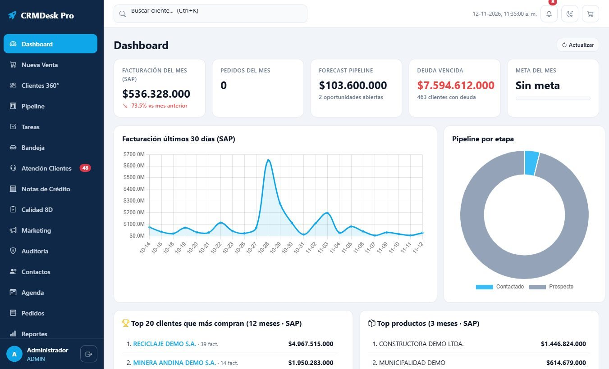
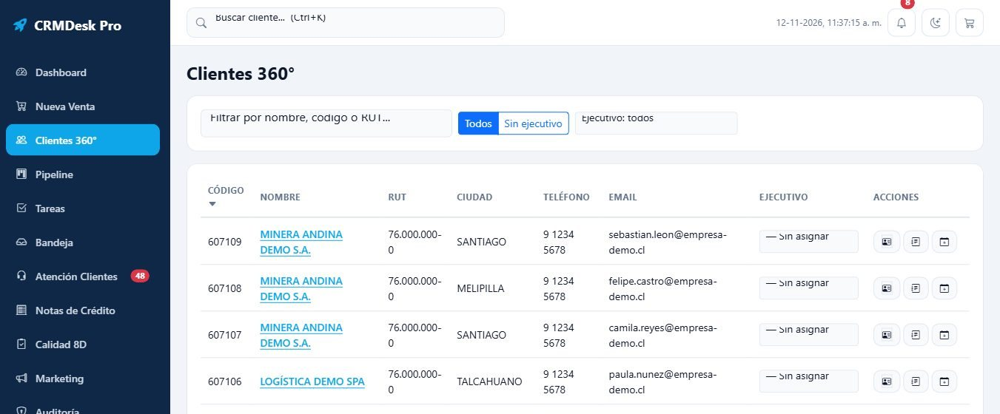
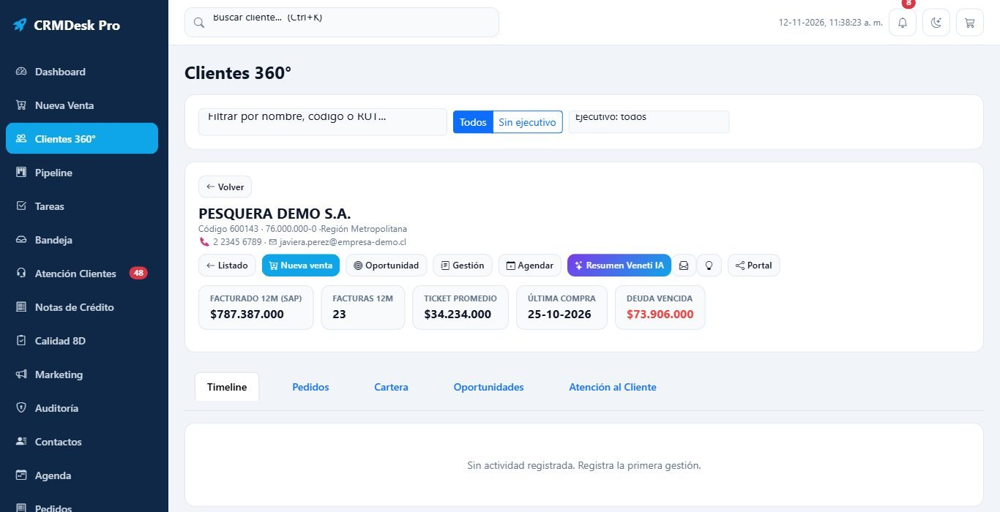
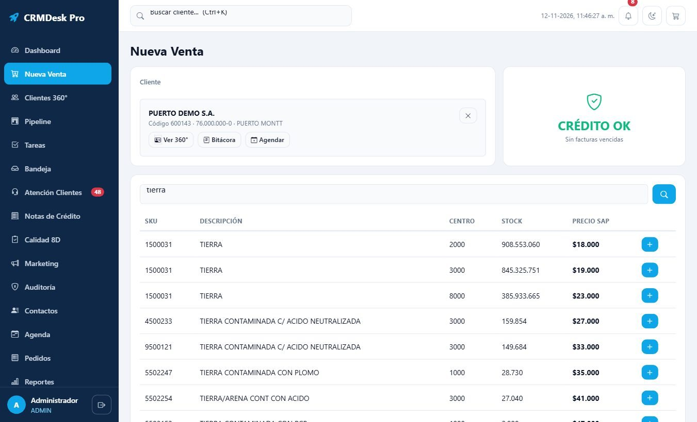
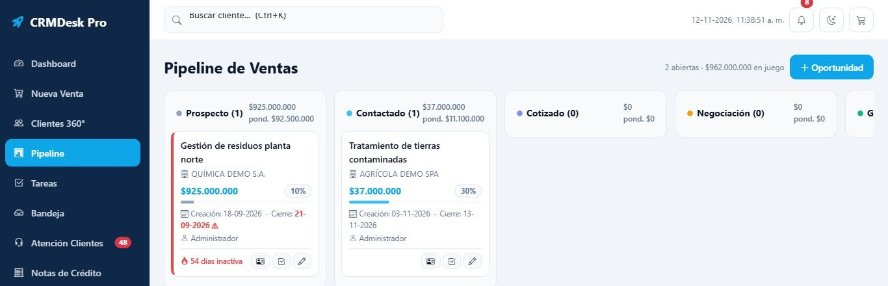
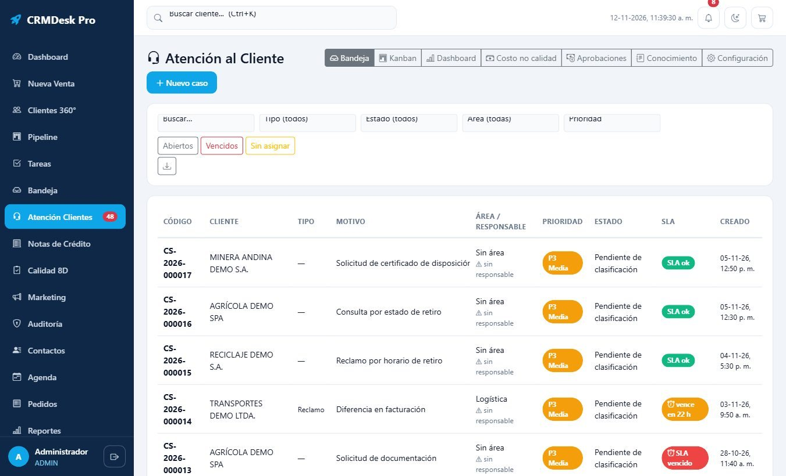
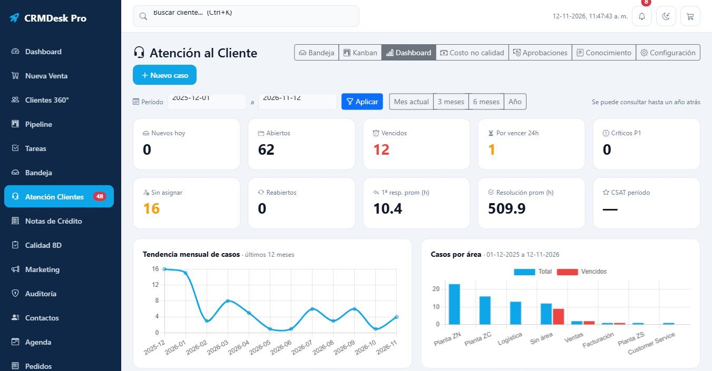
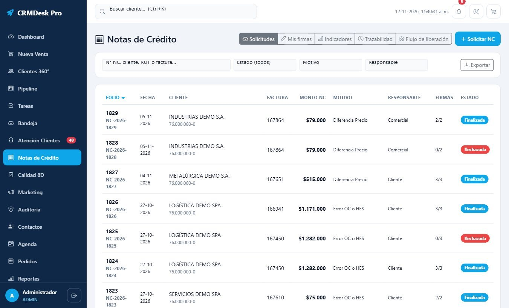
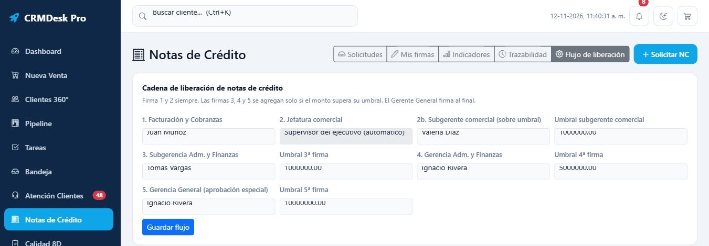
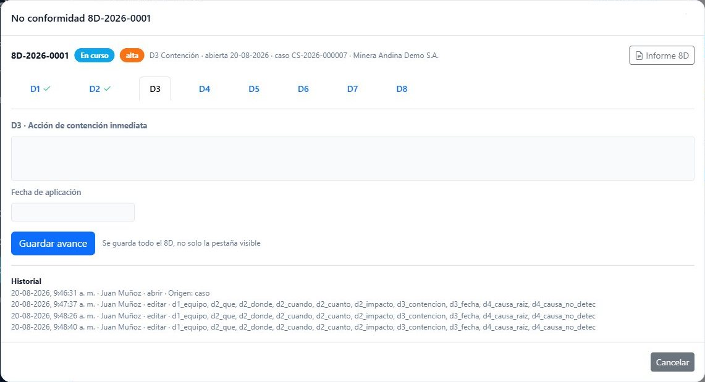
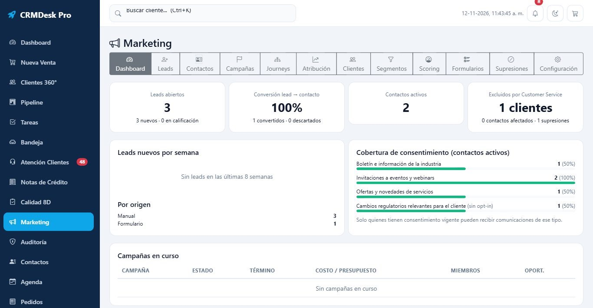
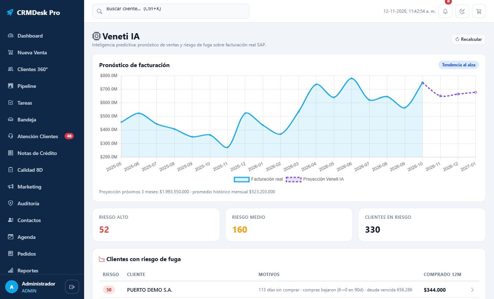
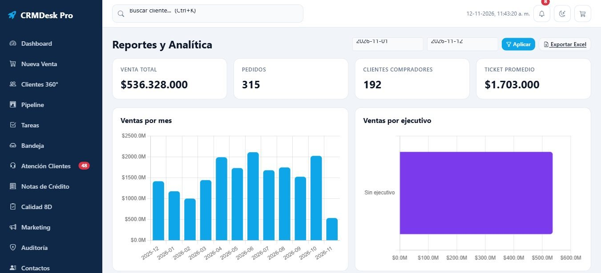
Clientes, facturas, cartera, stock y precios llegan desde SAP cada hora.
El ejecutivo trabaja desde Cliente 360°: gestiones, agenda, correo y oportunidades.
Crea la venta con stock y precio SAP en vivo, revisando el crédito del cliente.
Reclamos y solicitudes con SLA, notas de crédito con firmas y calidad 8D.
La gerencia sigue reportes, metas y comisiones, y Veneti IA pronostica ventas y riesgo de fuga.
Flask + PostgreSQL, Chart.js, interfaz web responsiva con modo oscuro
SAP (clientes, facturas, cartera, stock, precios), Microsoft 365, Gmail y SharePoint
Veneti IA: pronóstico de ventas, riesgo de fuga y redacción de correos
Verificación en dos pasos, roles, simulación de usuario y auditoría completa
Desde USD 6,9 por usuario al mes según el tamaño de tu equipo. Cotiza en línea o escríbenos y coordinamos una demo con tus datos.